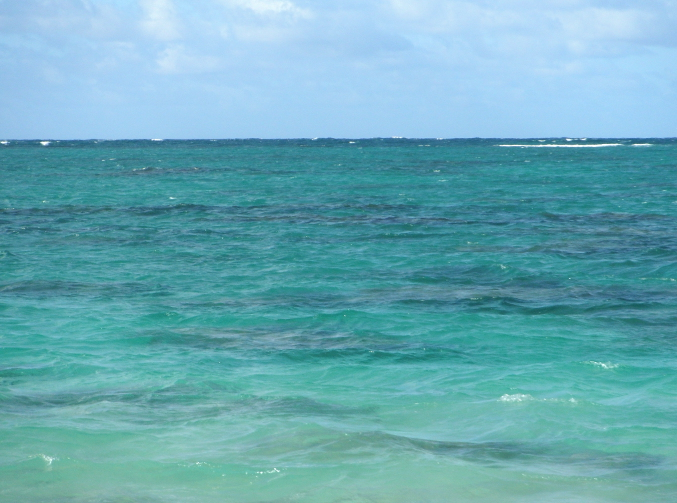

Here's our new mobile-friendly site: LIVE-ABOARDS.COM !
© Copyright U.S. Dive Travel Network.
INSIDE a GUIDED TOUR --
WILD ISLAND EXPEDITIONS TM
COME JOIN
The AMOSI FAMILY
On their CUSTOMIZED
HONDURAS ADVENTURE ! |
|
 |
WILD ISLAND EXPEDITIONS
offers two types of guided adventure tours overseas:
1. Periodic live-aboard full-vessel charters in the Pacific & Caribbean.
2. Private
Customized Group Tours. Click Here for High Adventures !
You can retain the services of our expert overseas guides
for a special customized adventure tour -- to almost any country your imagination
desires -- any season of the year. We'll be happy to help you plan the tour from day
1, then assign a qualified adventure-travel pro to direct the overseas
day-to-day details of your "Custom-Combi Tour." Click the hot-link
above to explore our newest vacation option.
To better show how WILD ISLAND EXPEDITIONS
designs & plans customized guided tours for families,
dive clubs, private social clubs, office buddies & groups of friends,
we've reprinted here below an actual itinerary of a family group whom we
guided on a 10-day adventure vacation not long ago. Below our introduction
here, we've reprinted the pre-trip planning memo that we mailed out to
get everybody revved up & prepared. Their trip to the peaceful Bay Islands
of Honduras was a delight and a success in all four ways that matter most:
- Each client's per-capita tab came in at least $200
below normal retail for spring prices on their host island, after WILD ISLAND EXPEDITIONS
secured a special group discount at the resort plus wholesale
air tickets. As a whole, the family group saved nearly $2,000.
- Folks all said they had a wonderful time. The
diving was superb, aided by good weather.
- Everybody stayed safe & healthy -- no urchin
handshakes, no intestinal cha-chas.
- The personal dynamics of the group were hassle-free
& blessed with good humor.
Here's how the Amosi Family's booking process
worked, so you can see how smoothly their advance planning, & their
trip itself, flowed along from A to Z. We have changed the family names
& a few minor details to protect their privacy, but the actual itinerary is copied straight from
USDT's group-tour files, verbatim.
The father of the extended family, Dr. Amosi,
is a thoughtful & life-positive guy who proved to be a joy to work
with. He telephoned U.S. Dive Travel near the first of the year to ask
for help in organizing a special family adventure overseas. We talked with
him for about an hour as he sifted through various options. There was no
rush, we assured him -- "just take your time & highlight your
priorities for us." Dr. Amosi asked us to search out 3 or 4 resort
options that offered high-quality diving at a fair price, with
reasonable airfares from Seattle.
That afternoon we assembled a detailed information
portfolio on resorts in Belize, Honduras, Mexico & Hawaii -- with color
brochures & in-depth fact sheets -- & mailed it off right away.
Dr. Amosi received the packet within 48 hours of his phone call.
About a week later he called us & asked for
an appointment. We had time open later that week & set the meeting
forthwith. Four members of the family, a kind of "vacation recon"
team, drove about 80 miles to visit our former main office in downtown Seattle.
It was a fun afternoon, about 2.5
hours together, punctuated with easygoing humor & spirited questions.
We gave the family members a thorough presentation with color slides, brochures
& maps. The clients relaxed & asked all the questions they needed,
in a low-key & low-pressure environment. Then they bid us adieu.
Two weeks later Dr. Amosi called us back &
hired WILD ISLAND EXPEDITIONS to
provide a guided diving & cultural tour to Honduras. He paid the deposits
for 10 divers, picking a great little inn, NAUTILUS DIVE RESORT, on the
unspoiled island of Guanaja in the Bay Islands of Honduras. Then 70 days
before departure the Amosi family paid in full, as per USDT terms &
conditions. USDT's guide flew to Guanaja a few days before their arrival
to prep the resort for them. Here's the memo he mailed them just before
he left Seattle.
AMOSI
FAMILY ITINERARY: HONDURAS TRIP in MAY
Participant Funseekers
(each dynamic duo is sharing a room):
- Dr. Almar Amosi & Jayne Amosi (spouses)
- Martin Amosi & Holly Ann Amosi (spouses)
- Lance Marshall & Sandra J. Marshall
- Theodore Amosi & Adam Fowler
- Joshua Greenbaum & Dr. Lucia Greenbaum (spouses)
- John Hessburg, tour leader & divemaster
(rooming solo).
MAJOR
FUNSEEKER ALERT:
All scuba divers, please remember to bring your
diving certification cards, your passports, your driver's license &
greenbacks or US travelers checks for emergency money or side expenses.
US currency is readily accepted all over Honduras, but travelers checks
are safest. Also remember to carry your regulators, dive computers, plus
other fragiles & valuables with you on the plane as you depart Seattle,
or Portland. It's safer that way.
Bring mucho bug spray. Also bring American snack
foods such as dried fruits, candy bars, fruit tarts, beef jerky -- if you
crave such goodies frequently. Avon Skin-So-Soft works great against the
no-see-ums & mosquitoes, though some wags suggest it makes you smell
like a French cathouse. Call Almar or me to fax you a copy of the trip
preparation checklists I gave the family several months ago, just in case
you still haven't seen one.
Be sure to get malaria prophylaxis & any
other shots your doctor recommends. Ask your doctor about the good old
classic chloroquine for malaria prevention. It's safe & you need only
one tablet the week before you leave, one each week while you're abroad,
& one each week for about 5 weeks after you return. Pack light. Just
a few T shirts, shorts & sandals are fine. It will be warm & summery.
May is usually the ideal month to be diving in the Bay Islands. You all
picked a winner! You're in for Big Fun on de Bayou.
And remember the Hessburg Hat Guarantee. After
the trip's over, if you honestly believe that you had a lousy time, speak
up & John will fork over a few bucks to buy the hat of your choice
in San Pedro. In full view of everybody, camcorders whirring, John will
eat one hefty bite of that hat for you, to atone for his sins of earthly
imperfection.
(May 6)
- Joshua & Lucia Lv Portland 7:30 am, Ar Houston
2:09 pm, overnight in Houston.
- Greenbaum's rez @ Houston Airport Doubletree
is under their Mastercard. Remember Joshua, please call 800-222-8733 if
you haven't secured room yet with card payment.
- Greenbaum's hotel rez # is 9671-07595. Airport
Doubletree has a free shuttle pickup.
(May 7)
- See separate air itineraries accompanying your
tickets for details. Almar & Jayne, Lance & Sandra, Ted & Adam,
Joshua & Lucia, Martin & Holly Ann all converge @ Houston International
Airport for group departure to San Pedro Sula, 2nd-largest city in Honduras.
Continental flight # 1057 Lv Houston 10 am, Ar San Pedro Sula 11:50 am.
- Upon arrival in San Pedro Sula, all 10 persons
proceed immediately to Islena Airlines ticket counter, pay about $80 US
cash each person for round-trip commuter flight to island. Check luggage
through to Guanaja, NOT just to La Ceiba. Escort your bags to the plane
if you feel so inclined, just to be safe. The airport is tiny, it's really
easy.
- Islena Flight # 314 Lv San Pedro Sula 3 pm,
Ar La Ceiba (coastal city) about 3:40 pm. Here you pick up a couple sweet
old ladies with chickens under their arms & off you go. Then Islena
#500 Lv La Ceiba 4 pm, Ar Guanaja about 4:35 pm. Honduran commuter airlines
are well-known to be "flexible" with departure & arrival
times. Just relax & enjoy the gentle-spirited people & everything
will flow smoothly. Hey, it's only the Third World.
- Lads from Nautilus Dive Resort will meet &
greet you at Guanaja's little landing strip. They'll take you right to
the resort's dock in a power boat. Service with a smile.
- Spend a relaxing evening at Nautilus w/ ample
time to stroll the plantation estate, enjoy a leisurely supper & hit
the hay early to prep for tomorrow's introductory dives.
- While at Nautilus Resort, all guests receive
as part of their package: 3 meals per day, dbl-occup rooms with sweeping
views of the estate, one free night dive per week, & 6 days of 3 boat
dives per day (assuming weather & currents allow). All other items
such as alcoholic beverages & soft drinks, or side trips such as deep-sea
fishing & sailing, will be offered at nominal extra charges. Each person
also will have to pay about $20 US airport departure tax upon leaving Honduras.
This is for your exit visa -- standard stuff.
- There are no roads on Guanaja Island, &
only a few phones, no shopping centers, no nightclubs, no industry &
no pollution, only heavenly peace & quiet & a refreshing old-world
way of life not much different from what it was five decades ago. You want
nighttime action? A Club Med this is not. This is Honduras & that's
why we're going! It's old-fashioned & that's great. Anyway, back to
the nocturnal jollies issue.
- Try taking a water taxi (maybe $10 a head round-trip)
over to the old Bonacca Cay, where about 2,000 people live in an old-world
stilt village atop an island smaller than 100 acres. There are two wonderfully
cheesy discos on Bonacca -- like Saturday Night Fever on the Planet Bizarro.
You'll love the very retro mirror-faceted revolving globe, the 70s &
80s music, & apple-cheeked young teens gallivanting while their folks
pretend to look the other way as the ingenuous mating rituals unfold. It's
really high camp & a lot of good clean fun. Cheap too. The local beers
are outstanding.
(May 8)
- Your resort-based underwater guide in charge
of daily dive operations will be Denis, a skilled divemaster who is a longtime fixture at
Nautilus Resort. Your travel guide, John, will help Denis on the vessel
each day, normally sitting out the first dive (deepest dive) to watch the
surface & "dry divemaster." John will join you for dives
two & three each day.
- Denis will take all divers out into shallow
water to check essential scuba skills & help orient all divers, to
ensure a high level of personal safety & awareness for all clients.
Denis may decide to lead you on 2-3 moderate or shallow
dives, to get the ol' sea legs wet again.
(May 9) to (May 13)
- Denis & John will lead you on 3 boat dives
per day, 2 in morning, one in afternoon, in an expanding pattern of exploration,
to show you the best & brightest of Guanaja's renowned reefs. Get set
to be amazed at the pristine purity of these corals, not to mention some
of the biggest & healthiest sponges anywhere in the Caribbean.
- The last day before departure, of course, all
divers are strongly advised to not dive in the afternoon, thereby leaving
yourselves close to a full 24 hours of safety decompression time before
you board the plane back to the mainland. This is vital. Let's be super
safe.
(May 14)
- John will accompany Almar & Jayne, Ted &
Adam, Joshua & Lucia on a 3-day overland tour of the Honduran mainland,
starting today. All 10 family team members, plus John, depart Guanaja early
morning.
- All 11 persons Lv Guanaja on Islena # 501 @
6:45 am, Ar La Ceiba about 7:20 am. Then Islena commuter flight Lv La Ceiba
about 8 a.m. & Ar San Pedro Sula at 8:35 am.
- Martin & Sandra head back to Houston. Lv
San Pedro Sula 12:30 pm, Ar Houston 5:50 pm. Overnight in Houston @ Airport
Doubletree Hotel. Your confirmation # is 7732-14595. Remember to call (800-222-8733)
ASAP to hold room for late arrival with your credit card number. The Doubletree
has a free airport shuttle. On May 15, Lance & Sandra Lv Houston 12:10
pm, Ar Seattle 2:46 pm. Lord bless y'all, we'll miss you!
- Martin & Holly Ann strike out for parts
unknown, plucky souls that they are. They may rent a Jeep to tour the back
country of highland Honduras. They'll be on their own from May 14-21. On
May 21, Martin & Holly Ann Lv San Pedro Sula 12:30 pm, Ar Houston 5:50
pm. Overnight in Houston @ Airport Doubletree. Confirmation #8746-140595.
Remember also to call 800-222-8733 w/ your credit card to hold the room
for late arrival.
- John, Joshua & Lucia, Almar & Jayne,
Ted & Adam arrive in San Pedro Sula about 8:40 am & will be met
by rep's of Mayan & Caribbean Tours. A Honduran native driver &
trip valet, accompanied by the owner of MCT, will serve as our Guy Friday
for these three days. At the invitation of Almar, John, who is fluent in
Spanish & who's lived & traveled for years in Latin America, will
serve as an on-the-road translator, troubleshooter, ombudsman & all-round
helpin' sorta ramblin' kinda guy.
- The Magnificent Seven, plus the 2 local men,
will saddle up in an air-conditioned van & head for Copan's great Mayan
ruins, largest & most colorful of the Mayan centers in Meso-America.
It's a colorful ride of about 4+ hours, with several stops for photos,
meals, mingling with natives & brief breaks (inspired by ancient biological
imperatives.)
- All meals are provided on this overland tour
(snacks are not) up until the third day, when we're all on our own for
lunch & supper. Local food is very economical, & delicious. Not
to worry. We just won't drink the agua. Bring filters or iodine tabs.
- We spend the first mainland night in Copan,
at the Hotel Marina Copan, a lovely old lodge where birds flit about the
flower gardens right outside your door, & you can swim across the pool
to lean up on the bar. The inner court smells as fresh as a conservatory.
(May 15)
- Full day of cavorting about the ruins, &
the Sepulturas (catacombs), snapping photos, heeding our driver's informed
commentary, plus optional horseback riding near Copan for those with a
yen for frontier fun. This should be a wonderfully informative & relaxing
day. Once again we stay in the Marina Copan overnight, relishing local
cuisine.
(May 16)
- After breakfast we leisurely hit the road again
& meander back to San Pedro Sula by car. It's a charming old colonial city that
exudes 19th Century charm. On the road we pay for lunch & dinner
ourselves. This evening we spend at the Gran Hotel Sula, in the heart of San Pedro.
We'll all be free to split up & sightsee, nap, go on a stroll of local
markets, do whatever we please. John will tie up some loose ends with local
business folk. We may decide to have a grand going-home celebration supper
together, assuming we're all still in love after
all these days in close proximity. (Ay caramba, we'll probably do just
fine.)
(May 17)
- The Magnificent Seven Lv San Pedro Sula @ 1:50
pm on Continental #1057, Ar Houston 5:50 pm. Overnight in Houston @ Airport
Doubletree, as usual. Free shuttle available. Please call 800-222-8733
to confirm your rooms w/ credit cards, to ensure they are held for late
arrival. Don't forget folks, or your room rezzies will melt into the Miasmal
Mists @ precisely 6 p.m. May 17.
- Almar & Jayne, your confirmation number
is 9347-170595.
- Ted & Adam, your confirmation # is 9348-170595.
- Joshua & Lucia, yours is 9349-170595.
- John, you get to sleep in the broom closet next
to the ice machine.
- Josh & Lucia, on American #1318, Lv Houston
@ 12:42 pm, via Dallas, & Ar Portland 6:33 pm, refreshed, renewed &
ready to roll back to The Big City Life, we hope.
- The Magnificent 7 departs Houston @ 12:10 pm
on Continental #665, Ar Seattle 2:46 pm, thereby reaching the etapa final
of another splendid vacation. Farewell hugs, not slugs, will be the preferred
order of the day, then we all split to see our loved ones back home. Great
to get to know you all. Hope we're blessed to see you again. Ciao &
Godspeed to one & all. You are all wonderful people & it's been a joy to
serve you. -- John Hessburg
Voice Mail: 952-953-4124.
Fax Line: 952-431-5023.
E-mail address: divetrip@bitstream.net
Internet Address:
www.usdivetravel.com
© Copyright John Hessburg, U.S. Dive Travel.